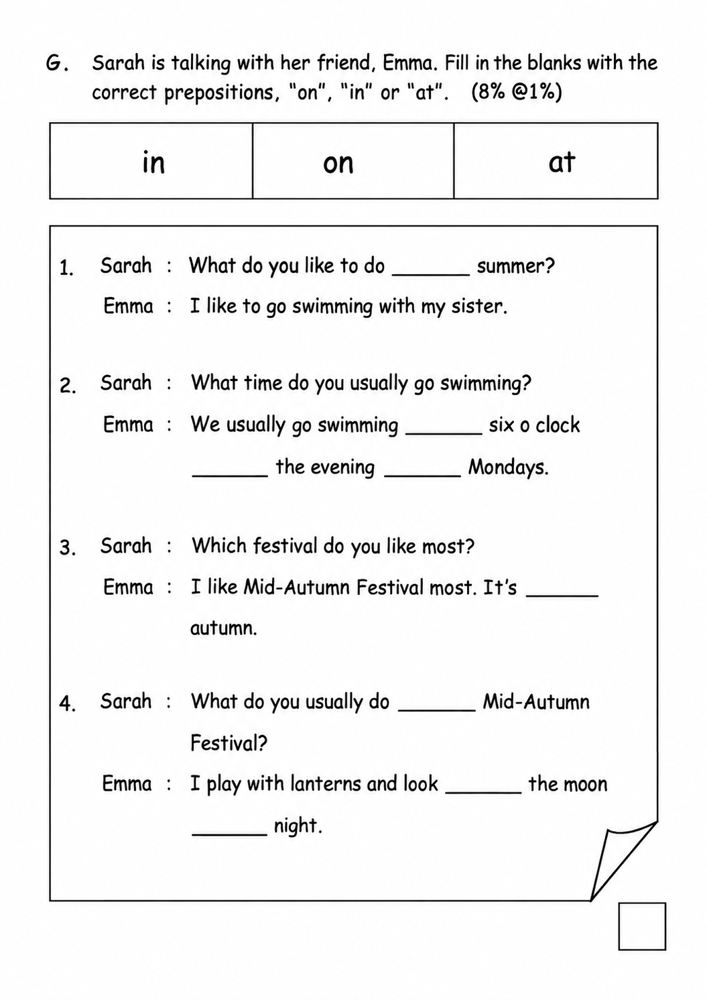
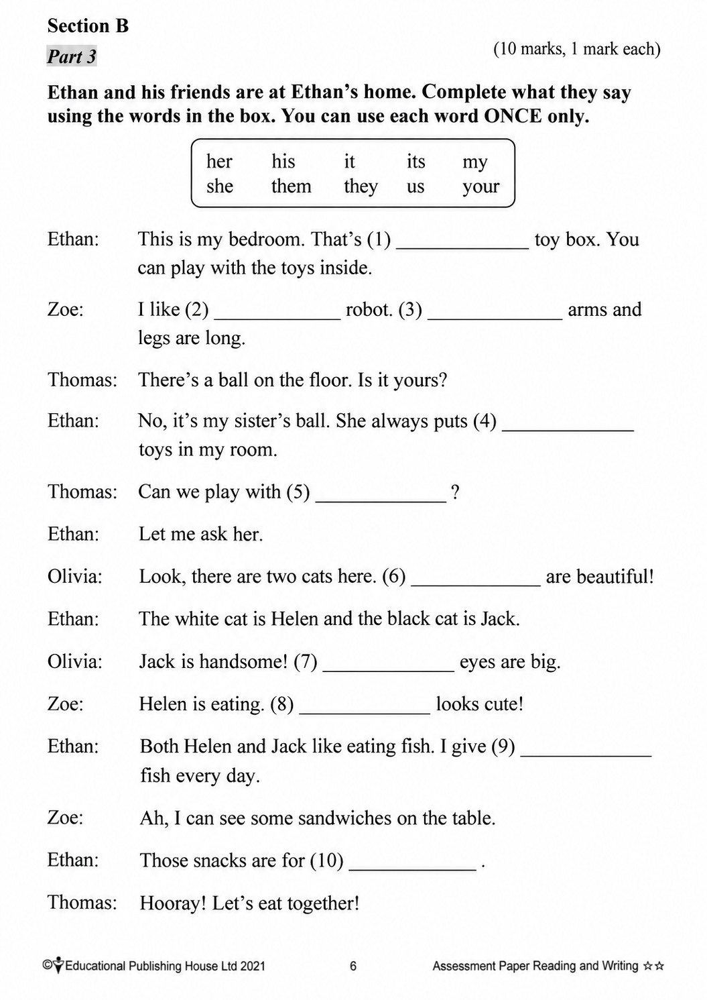

已掌握
| # | 中文意思 | 例句/提示 | 英文默写 | 已掌握 |
|---|---|---|---|---|
| noun 名词 | ||||
| 1 | 朋友 | My is kind. | ||
| 2 | 模型 | I build a car . | ||
| 3 | 头发 | Her is long. | ||
| 4 | 班长 | The helps the teacher. | ||
| 5 | 机器人 | The can move. | ||
| 6 | 空气 | We need to breathe. | ||
| 7 | 阅读 | helps me learn new things. | ||
| 8 | 神明 | Zeus was a in Greek stories. | ||
| verb 动词 | ||||
| 9 | 待在 | I at home on rainy days. | ||
| 10 | 吃饭 | We together every evening. | ||
| 11 | 发送 | I will you a postcard. | ||
| 12 | 感觉 | I happy today. | ||
| preposition 介词 | ||||
| 13 | 在……之下 | The cat is the table. | ||
| phrase 短语 | ||||
| 14 | 小学 | My sister goes to . | ||
| noun phrase 名词短语 | ||||
| 15 | 篮球场 | We play on the . | ||
| adjective 形容词 | ||||
| 16 | 美丽的 | The flower is . | ||
| uncategorized 未分类 | ||||
| 17 | 浇水 | Please the plants. | ||
| 18 | 错过 | Hurry up, or we will the bus. | ||
| 19 | 协助帮助 | I my teacher by handing out books. | ||
| 20 | 日记 | I write in my every evening. | ||
| # | 单词/词组 | 中文意思 | 例句/说明 | 已掌握 |
|---|---|---|---|---|
| adjective 形容词 | ||||
| 1 | wrong | The answer is wrong. | ||
| 2 | newborn | The newborn baby is small. | ||
| 3 | smart | The smart girl solved the puzzle. | ||
| 4 | different | Our bags are different colours. | ||
| 5 | brave | Gopal is very brave. | ||
| 6 | wise | The wise man gave good advice. | ||
| noun 名词 | ||||
| 7 | pronoun | "He" is a pronoun. | ||
| 8 | axe | The man has an axe. | ||
| 9 | hamster | The hamster sleeps in its cage. | ||
| 10 | slide | The child goes down the slide. | ||
| 11 | I got some mail today. | |||
| 12 | reindeer | The reindeer is walking in the snow. | ||
| 13 | balloon | The red balloon is floating in the air. | ||
| 14 | prepositions | We are learning prepositions today. | ||
| 15 | badminton | I play badminton with my friend. | ||
| noun phrase 名词短语 | ||||
| 16 | a box of chicken wings | May I have a box of chicken wings, please? | ||
| 17 | a cup of hot chocolate | I'd like a cup of hot chocolate. | ||
| 18 | a fork | Mix the egg with a fork. | ||
| 19 | a pan | Heat some butter in a pan. | ||
| verb 动词 | ||||
| 20 | collect | I collect stamps. | ||
| 21 | save | We can save the bird. | ||
| adverb/adjective 副词/形容词 | ||||
| 22 | still | Please stand still. | ||
| phrase 短语 | ||||
| 23 | rhyming words | "Cat" and "hat" are rhyming words. | ||
| verb phrase 动词短语 | ||||
| 24 | chatting with friends | He likes chatting with friends. | ||
| 25 | get red packets | We get red packets at Chinese New Year. | ||
| 26 | sing carols | We sing carols at Christmas. | ||
| 27 | eat chocolate eggs | We eat chocolate eggs at Easter. | ||
| uncategorized 未分类 | ||||
| 28 | lucky | I was lucky to find my lost key. | ||
| 29 | concert | We went to a concert last night. | ||
| adjective phrase 形容词短语 | ||||
| 30 | end-of-year | We are getting ready for the end-of-year exam. | ||
| # | 中文意思 | 例句/提示 | 英文默写 | 已掌握 |
|---|---|---|---|---|
| time/date 时间日期 | ||||
| 1 | 五月 | is the fifth month. | ||
| 2 | 六月 | is the sixth month. | ||
| 3 | 十一月 | is the eleventh month. | ||
| time unit 时间单位 | ||||
| 4 | 年 | A has 12 months. | ||
| 5 | 月 | A has many days. | ||
| 6 | 周 | A has 7 days. | ||
| directions 方向 | ||||
| 7 | 东 | The sun rises in the . | ||
| numbers 数字 | ||||
| 8 | 30 | is 30. | ||
| 9 | 50 | is 50. | ||
| 10 | 百 | One is 100. | ||
| solid shape 立体图形 | ||||
| 11 | 五棱锥 | A has one pentagonal base and five triangular side faces. | ||
| 12 | 圆锥 | A has one curved face. | ||
| 13 | 圆柱 | A has two circular faces. | ||
| 14 | 侧面 | A is on the side. | ||
| geometry 几何 | ||||
| 15 | 钝角 | An is greater than 90 degrees and less than 180 degrees. | ||
| # | 单词/词组 | 中文意思 | 例句/说明 | 已掌握 |
|---|---|---|---|---|
| numbers 数字 | ||||
| 1 | approximate value | The approximate value of 198 to the nearest ten is 200. | ||
| operations 运算 | ||||
| 2 | be left | How many apples will be left? | ||
| geometry 几何 | ||||
| 3 | angle | An angle is formed by two rays with the same endpoint. | ||
| 4 | dotted line | Draw a dotted line between the two points. | ||
| question word 题目词 | ||||
| 5 | estimate | Estimate the answer first. | ||
| 6 | respectively | Tom and Ben have 2 and 3 books respectively. | ||
| answer 答案 | ||||
| 7 | answer | Write the answer in the box. | ||
| 8 | result | Check the result after you calculate. | ||
| comparison 比较 | ||||
| 9 | fewer | There are fewer apples in this box. | ||
| 10 | least | Which number is the least? | ||
| 11 | fewest | Which group has the fewest? | ||
| 12 | heaviest | The 3 kg bag is the heaviest of the 1 kg, 2 kg and 3 kg bags. | ||
| time/date 时间日期 | ||||
| 13 | non-leap year | A non-leap year has 365 days. | ||
| 14 | hour hand | At three o'clock, the hour hand points to 3. | ||
| position 位置 | ||||
| 15 | behind | The bag is behind the chair. | ||
| 16 | below | The box is below the table. | ||
| 17 | arrow | The arrow points to the right. | ||
| operations calculation 运算 | ||||
| 18 | difference | The difference is the answer in subtraction. | ||
| 19 | product | The product is the answer in multiplication. | ||
| 20 | divide A by B | Divide A by B. | ||
| currency money 货币 | ||||
| 21 | exchange | We exchange money at the counter. | ||
| measurement 测量 | ||||
| 22 | fill | Fill the jug with water. | ||
| 23 | distance | Find the distance between the two points. | ||
| 24 | balance | We use a balance to compare the weights of two objects. | ||
| 25 | pointer | The pointer on the scale shows 2 kg. | ||
| position order 位置和顺序 | ||||
| 26 | following | Answer the following questions. | ||
| data charts 统计图 | ||||
| 27 | pictogram | Read the pictogram. | ||
| 句型结构 | ||||
| 28 | ... is to the east of ... | The school is to the east of the park. | ||
| 29 | ... is to the west of ... | The bank is to the west of the school. | ||
| 30 | ... is to the north of ... | The playground is to the north of the hall. | ||



![The map below shows the routes from Alex’s home to the campsite. (a) The route between the campsite and the ____ is the shortest. This route is ____ km long. (b) The shortest route from Alex’s home to the campsite is ____ km long. The shop(s) that he goes past in this route include(s): ____. (c) The instructor needs to go from the campsite to the supermarket and the accessory store to buy something, and then go back to the campsite. He has to travel at least ____ km, and his route is: Campsite → ____ → Campsite.](assets/question_sets/math_grade3_mistakes_2026-09-22_clean/image5.png)